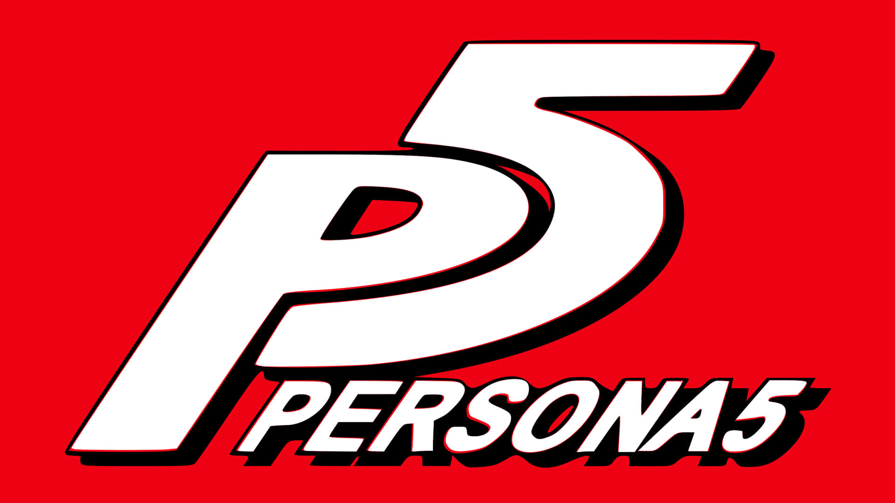

Välkommen till min sida! Jag heter Matthias och jag älskar att spela spel, här kommer mina 3 favorit spel:
Video Spel
Om mig
- Minecraft
- League Of Legends
- Persona 5
Lite mer om Spelen

Minecraft
Minecraft är ett äventyrs- och byggdatorspel. I Minecraft ska spelaren utforska och omvandla en värld byggd av kubikmeterstora kuber. Förutom kuber består världen också av växter, varelser och föremål. Spelet är helt öppet, så man kan göra i princip vad man vill i sin värld. Man kan bland annat syssla med gruvarbete, att bekämpa fientliga varelser och att bygga nya kuber och verktyg genom att samla på olika resurser. Dessutom kan spelarna skapa strukturer, skapelser och konstverk. Minecraft kan spelas tillsammans med andra, eller på egen hand.
League Of Legends
League of Legends (LoL) är ett lagbaserat onlinespel som går ut på att förstöra motståndarnas bas "nexus". Spelet är utvecklat och publicerat av Riot Games och släpptes den 27 oktober 2009 för Microsoft Windows och senare även för Mac OS.[4] Spelet är inspirerat av Defense of the Ancients som baserats på Warcraft III: The Frozen Throne.
League of Legends är gratis att ladda ner och spela men innehåller material som måste låsas upp allteftersom. En del extramaterial erbjuds via mikrotransaktioner, främst klädsel "skins" till spelets hjältar "champions" och hastighetsförbättringar som låter spelaren låsa upp material snabbare.
Jämfört med andra spel i genren multiplayer online battle arena (MOBA) är spelet mer riktat mot nybörjare då det anses som lättare att lära sig än dess motsvarigheter.

Persona 5
Persona 5 är ett datorrollspel i vilket spelare styr en gymnasieelev under ett år av hans liv; han får förmågan att frambesvärja aspekter av sitt psyke, som kallas personae. Spelaren utforskar dungeons, och i vilka han eller hon bland annat hoppar över avgrunder och springer mellan olika gömställen. Spelets dungeons innehåller både fasta platser som är kopplade till spelets handling och tema, och slumpmässigt genererade omgivningar. Spelets strider är turordningsbaserade, och involverar att figurer använder både sina personae och två vapentyper: pistoler och närstridsvapen. En justerad variant på Social Links, ett element från Persona 3 och 4, finns även med i Persona 5.
Text tagen från Wikipedia
Bild tagen från Logo.com, brand.riotgames.com och Wallpaper.com